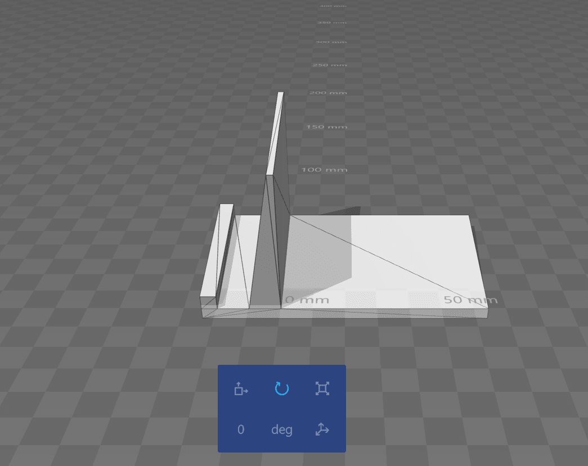
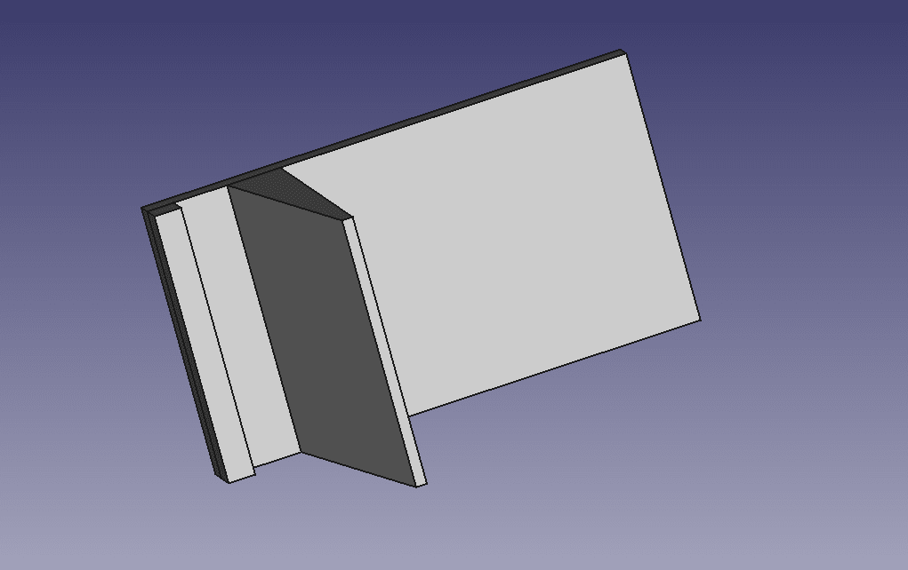
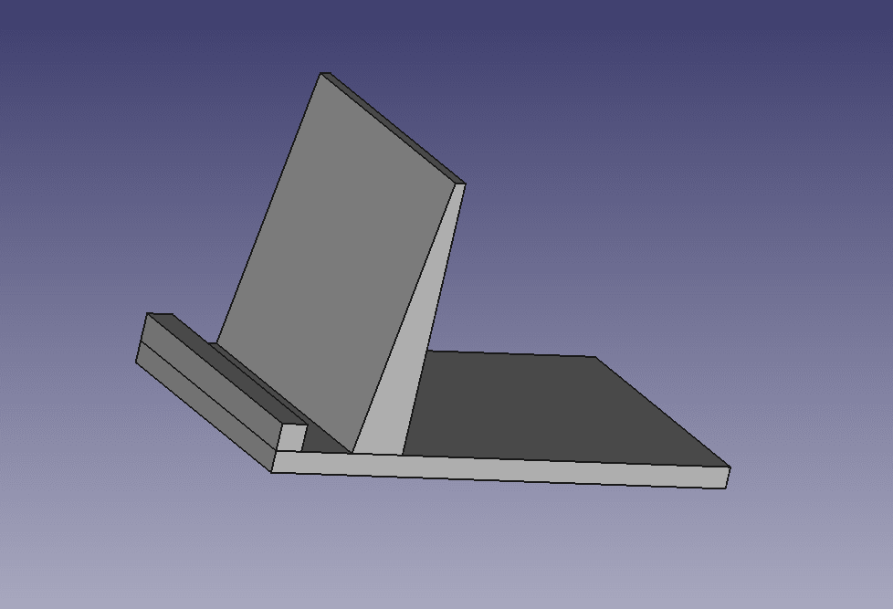
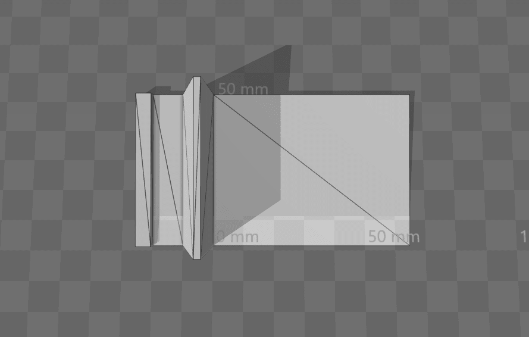
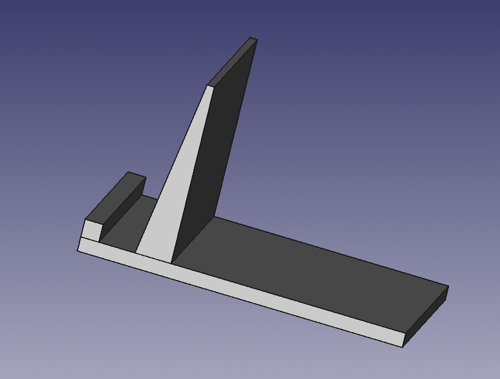

This task is a part of assignment 4, where we suppose to get our feet wet with little of 3-d printing. Since we were going to get something 3-d print we thought why not something useful. we designed a cell phone stand to keep the phone steady. Below is our work of design.
    
Firstly we had to figure out right software and way to transfer our design to the 3D printer.
After failed attempt of loading the wrong file type to the SD card we figure out the right file format that we need our file to be in order to 3D printer to detect it.
For the temperature, we googled a bit and decided on the nozzle temperature to be 210 and platform temperature to be 60.
waited for 5 mins, nothing is printing 5 more mins still nothing, then we noticed the material was not sticking to the platform it was curling around the nozzle itself. Probably our platform temperature needs to be increased.
In our next attempt, we kept the platform temperature to be 80 and material temperature to be the same 210. This time it started printing, It took 3-4 hours to get it done. Also we had to scale down out object a bit since many of us were trying to print together.
Below is the result.